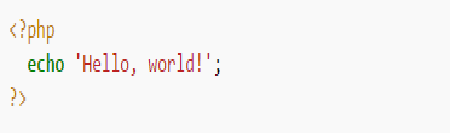
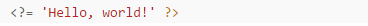
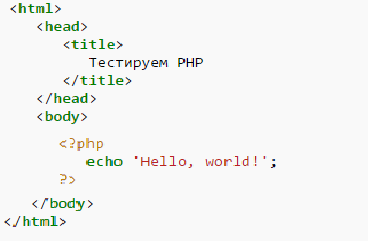

Синтаксис PHP подобен синтаксису языка Си. Некоторые элементы, такие как ассоциативные массивы и цикл foreach, заимствованы из Perl.
Для работы программы не требуется описывать какие-либо переменные, используемые модули и т. п. Любая программа может начинаться непосредственно с оператора PHP.
Простейшая программа Hello world на PHP выглядит следующим образом:

Также возможен более короткий вариант вывода строки:

Открывающий тег вида <?= используется для сокращённой записи конструкций используемых для вывода строки. PHP исполняет код, находящийся внутри ограничителей, таких как <?php ?>. Всё, что находится вне ограничителей, выводится без изменений. В основном это используется для вставки PHP-кода в HTML-документ, например, так:

Помимо ограничителей <?php ?>, допускается использование сокращённого варианта <? ?>. Кроме того, до версии 7.0 допускалось использование ограничителей языка программирования ASP <% %> и <script language="php"> </script>. Работа сокращённых конструкций определяется в конфигурационном файле php.ini.
Имена переменных начинаются с символа $, тип переменной объявлять не нужно. Имена переменных и констант чувствительны к регистру символов. Имена классов, методов классов и функций к регистру символов не чувствительны. Переменные обрабатываются в строках, заключённых в двойные кавычки, и heredoc-строках (строках, созданных при помощи оператора <<<). Переменные в строках, заключённых в одинарные кавычки, не обрабатываются.
PHP рассматривает переход на новую строку как пробел, так же как HTML и другие языки со свободным форматом. Инструкции разделяются с помощью точки с запятой (;), за исключением некоторых случаев, после объявления конструкции if/else и циклов.
Переменные в функцию можно передавать как по значению, так и по ссылке (используется знак &).
PHP поддерживает три типа комментариев: в стиле языка Си (ограниченные /* */), C++ (начинающиеся с // и идущие до конца строки) и оболочки UNIX (с # до конца строки).